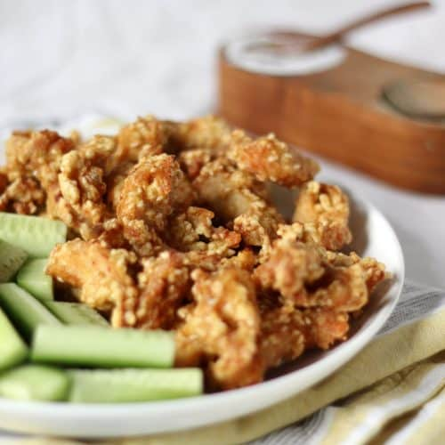

Fried Chicken with Sesame

I've actually never tried this but it sounds delicious. It's from Ann Rogers' The New Cookbook for Poor Poets.
Ingredients
- 4 pounds of chicken, cut for frying
- 1 egg
- 1/2 cup milk
- 1/2 cup flour
- 1/2 tsp baking powder
- 2 tsp paprika
- 2 tsp salt
- 1 tsp pepper
- 1/4 cup finely chopped peanuts
- 1/4 cup sesame seeds
- 1 stick of butter
Steps
- Beat the egg and mil together. Dip chiken pieces into this and then into the flour mixed with baking powder, salt, pepper, paprika, nuts and sesame seeds.
- Fry the chicken until it is nicely browned. Add a tbsp of water and cover pan loosely. Cook over low heat for about 45 mins or until chicken is tender.
- If you want gravy, add 1.5 cups of milk to drippings in pan and heat to scalding. Mix 4 tbsp flour with an extra half cup milk, add to pan and cook, stirring constantly until thick and smooth. Add salt, pepper, lots of paprika and a dash of sherry.